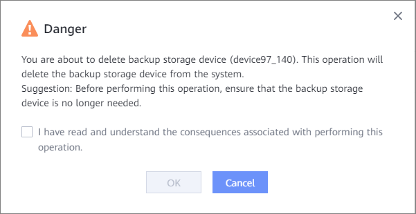

This section describes how to delete a backup storage device that is no longer used.
Precautions
- A backup storage device that belongs to a local cluster cannot be deleted.
- A backup storage device to which a backup storage unit has been added cannot be deleted.
Procedure
- Choose .
- Click Backup Storage Unit Groups.
- Select Backup Storage Devices.
- In the row that contains the backup storage device to be deleted, choose .
- In the Danger dialog box that is displayed, confirm the information, select I have read and understand the consequences associated with performing this operation., and click OK.
